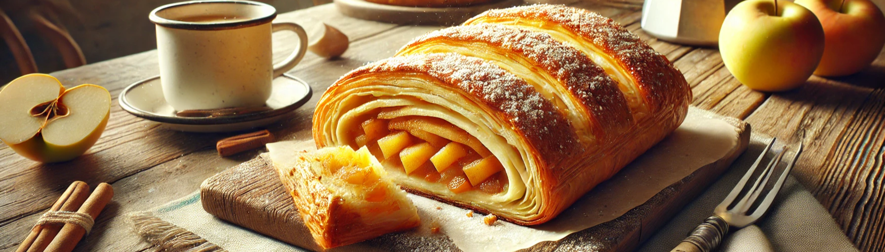

Apfelstrudel

Zutaten
- 1 kg Äpfel (z. B. Boskop oder Elstar)
- 100 g Zucker (je nach Geschmack)
- 1 TL Zimt
- 50 g Rosinen (optional)
- 50 g gehackte Walnüsse oder Mandeln (optional)
- 50 g Butter
- 1 EL Semmelbrösel
- Saft einer halben Zitrone
- 1 Ei (zum Bestreichen)
- Puderzucker (zum Bestäuben)
Zubereitung
- Teig vorbereiten: Mehl, Salz, Ei, Öl und lauwarmes Wasser in eine Schüssel geben und zu einem glatten Teig kneten.
- Den Teig dann auf einer leicht bemehlten Fläche ausrollen und so dünn wie möglich ausziehen. Du kannst den Teig auch mit den Händen dehnen, sodass er fast durchscheinend wird.
- Decke den Teig ab und lasse ihn 30 Minuten ruhen.
- Füllung zubereiten: Die Äpfel schälen, entkernen und in dünne Scheiben schneiden.
- In einer Schüssel die Äpfel mit Zucker, Zimt, Zitronensaft, Rosinen und gehackten Nüssen vermengen.
- Die Butter in einer Pfanne schmelzen und die Semmelbrösel darin goldbraun rösten. Dann die Butter mit den Semmelbröseln zur Apfelmischung geben und gut vermengen.
- Apfelstrudel formen: Den Teig auf einem leicht bemehlten Tuch oder Backpapier ausrollen.
- Die Apfelfüllung gleichmäßig auf dem Teig verteilen, dabei am Rand einen kleinen Abstand lassen.
- Den Strudel mit Hilfe des Tuchs oder Papiers vorsichtig einrollen. Achte darauf, dass der Strudel nicht reißt.
- Backen: Den Strudel auf ein mit Backpapier belegtes Blech legen und mit verquirltem Ei bestreichen.
- Im vorgeheizten Ofen bei 180°C (Ober-/Unterhitze) ca. 35-40 Minuten goldbraun backen.
- Fertigstellen: Nach dem Backen den Apfelstrudel leicht abkühlen lassen und mit Puderzucker bestäuben.